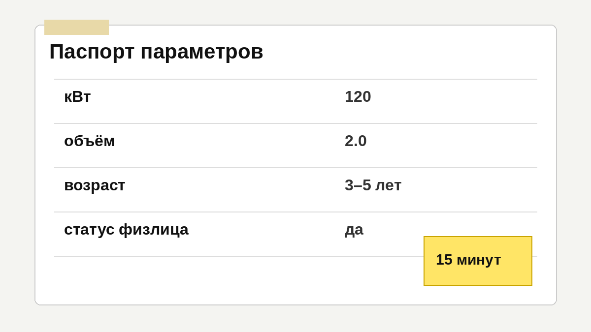
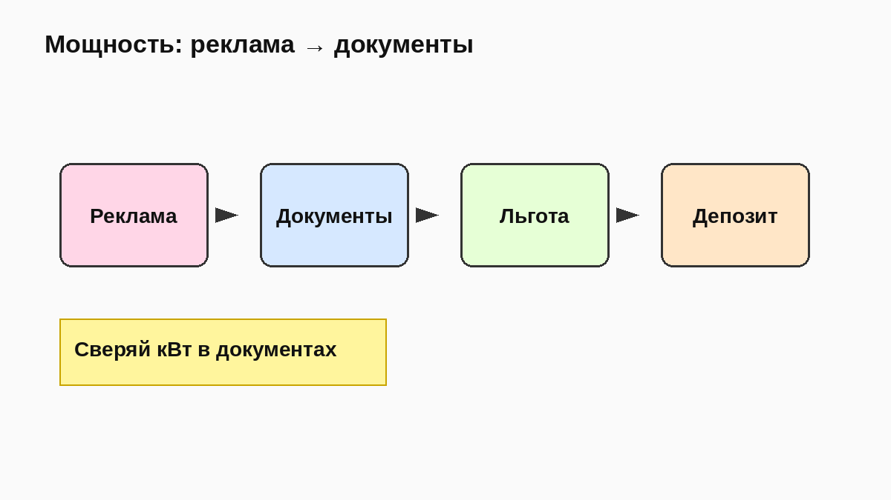
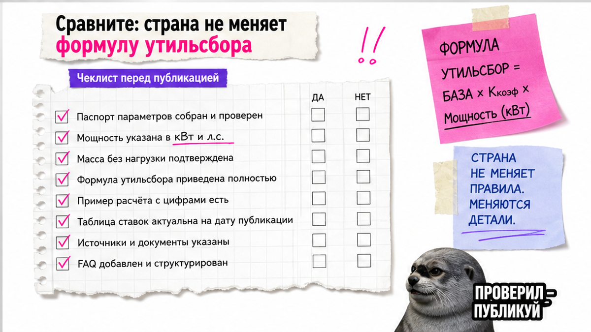

Антон из Новосибирска почти внёс депозит за корейский кроссовер "150 сил по объявлению". В экспортных бумагах вылезло 162 л.с. – и вместо льготных тысяч рублей утильсбор ушёл в коммерческую шкалу. Утильсбор на авто 2026 пугает именно так: калькуляторы спорят, а ошибка в мощности на 1–2 л.с. ломает бюджет. Ниже – чеклист до депозита: паспорт параметров, порог льготы и куда запросить расчёт.
Коротко до депозита: Утильсбор – обязательный платёж при ввозе авто, часть бюджета "под ключ". Ставки зависят от мощности, возраста и статуса ввозящего, а не от страны (Корея, Китай, Япония). До депозита соберите кВт из документов и условия льготы физлица. Точную сумму запросите в каталоге Авто-Сейлс, не в случайном калькуляторе.
Мы во Владивостоке видим одну ловушку: человек уже "влюблён" в лот на Encar или аукционе и хочет быстрее перевести деньги. А рекламная мощность и мощность для таможни – разные миры. Честно говоря, лучше 15 минут на сверку бумаг, чем потом объяснять себе, почему "пять тысяч" превратились в миллион.
Сюрприз июля 2026: в выдаче до сих пор висят статьи, что "с 1 апреля закрыли схему через ЕАЭС". По позиции Минпромторга (Интерфакс, Autonews) дата неактуальна, проект на согласовании. Для прямого ввоза Азии → Владивосток это фон. Держите фокус на параметрах авто.

Какую боль закрываем: непонятно, зачем утильсбор до депозита. На пальцах: это платёж при ввозе автомобиля. Без него машина не "закроется" на таможне. В бюджете "под ключ" он рядом с пошлиной и работой СВХ во Владивостоке. На практике паспорт параметров – короткий список в заметках. Без него любой калькулятор будет врать: вы кормите его рекламой, а не документами.
Схема до депозита:
Лот выбран → Паспорт параметров → Сверка кВт → Статус льготы → Расчёт у Авто-Сейлс → Депозит
Делать: собирать параметры до перевода. Не делать: считать утильсбор мелочью "на потом".

Типичная ошибка Антона: в объявлении 149–159 л.с., а в экспортной спецификации выше порога. На практике комплектации одной модели отличаются на 5–10 л.с. Юридически значимы киловатты из документов, не "лошади из буклета". Ориентир: около 117,6 кВт ≈ 160 л.с.
Для электромобилей и последовательных гибридов в обзорах 2026 часто другой порог (около 80 л.с. / 58,8 кВт) и 30-минутная мощность, а не пиковая с сайта. Не угадывайте тип установки по фото – спросите документ.
Делать: просить кВт и комплектацию до депозита. Не делать: бронировать лот по цифре из рекламы.

Миф: "из Кореи утиль дешевле", "из Китая дороже". Нет. Ставки не зависят от страны при прямом ввозе через РФ. Меняются логистика и документы – не "специальный утиль Кореи".
| Что сравниваете | Корея | Китай | Япония |
|---|---|---|---|
| Формула утильсбора | Параметры авто + статус | Параметры авто + статус | Параметры авто + статус |
| Что отличается | Encar, экспорт, логистика | Чаще EV/гибриды, документы | Аукционный лист, ролкер |
| До депозита смотреть | кВт, возраст, статус физлица | кВт (в т.ч. 30-мин для EV) | кВт из документов, дата выпуска |
| Откуда цифра платежа | Расчёт по лоту, не "таблица страны" | Расчёт по лоту, не "таблица страны" | Расчёт по лоту, не "таблица страны" |
Итоговый вердикт: Не выбирайте страну "из-за утиля вслепую". Сначала параметры и статус ввоза, потом модель. Утильсбор на авто из Кореи, Китая и Японии считается по одной логике.
Делать: сравнивать лоты по мощности и возрасту. Не делать: верить заголовку "утиль Корея дешевле Японии" без документов.
С 01.12.2025 по ПП РФ № 1713 к правилам ПП № 1291 для легковых М1 в расчёт добавлена мощность. Для физлица в обзорах часто указывают ориентир льготы около 3 400 ₽ (до 3 лет) и около 5 200 ₽ (старше 3 лет) при ДВС до 160 л.с. Это ориентир на 2026-07-18, не прайс Авто-Сейлс.
Базовая ставка легковых в обзорах 2026 – 20 000 ₽; коммерческий итог = база × коэффициент (индексация с 01.01.2026). Разница льготы и коммерции – тот самый "миллион+" для новичка.
Делать: честно ответить "для себя / не продаю год / мощность в зоне". Не делать: путать льготу физлица с коммерческим ввозом.
Если паникуете из-за гайдов "с апреля 2026 всё изменилось через ЕАЭС" – остановитесь. Основной маршрут Авто-Сейлс – прямой ввоз из Японии, Кореи и Китая через Владивосток. На июль 2026 Минпромторг сообщал: дата 1 апреля неактуальна, проект на согласовании.
Делать: идти по прямому маршруту и сверке параметров. Не делать: откладывать заказ из-за чужого заголовка без первоисточника.
Калькуляторы в выдаче дают разные суммы: у каждого свои допущения и устаревшие коэффициенты. Мы не публикуем коммерческую матрицу как "ваш точный платёж". Соберите паспорт параметров и запросите ориентир по конкретному лоту.
После расчёта зафиксируйте итог "под ключ" (утиль + таможня + СВХ) одним сообщением менеджеру – и только потом депозит. Офис: Владивосток, Днепровская 40а, строение 4. Связь – в Telegram @avtosales125, подбор и расчёт – в каталоге Авто-Сейлс.
Делать: один запрос с полным паспортом. Не делать: платить депозит без сверки документов и ориентира.
После чеклиста вы должны ответить: "льгота возможна", "только коммерческий расчёт" или "нужен расчёт у менеджера" – без ощущения, что "это только для таможенщиков". Критерий результата прост: вы понимаете зону платежа до оплаты и не несёте депозит вслепую. Пять проверок до депозита: кВт из документов, возраст по дате выпуска, статус физлица и личное пользование, готовность не продавать 12 месяцев, запрос расчёта по лоту – не по чужой таблице.
Материал проверен: Редакция Авто-Сейлс (эксперты по авто под заказ из Японии, Кореи и Китая).
Достоверность: факты сверены с ПП РФ № 1291 / № 1713 (pravo.gov.ru, Альта-Софт, КонсультантПлюс), позицией Минпромторга по ЕАЭС (Интерфакс, Autonews) и обзорами ставок 2026 (Рамблер, МК, AZWAY, Сравни.ру); коммерческие суммы не публикуем – расчёт по лоту в каталоге. Дата проверки: 2026-07-18.
Да, формула одна: параметры машины и статус ввозящего. Выберите лот по мощности и возрасту, затем запросите расчёт по документам – не по "таблице страны".
Соберите паспорт параметров и отправьте лот в каталог Авто-Сейлс или в Telegram @avtosales125. Получите ориентир под ваши документы, а не среднее по выдаче.
С 01.12.2025 мощность – ключевой параметр шкалы. Берите кВт из экспортных бумаг. Объём тоже смотрите, но "рекламные л.с." без кВт – уже риск.
Не закладывайте такую схему. В практике доначислений ФТС ранняя продажа – частая причина пересчёта до коммерческой ставки. Планируйте личное пользование минимум год.
Не автоматически. Для EV и последовательных гибридов другой порог и важна 30-минутная мощность. Уточните тип и кВт в документах, затем запросите расчёт.
Для прямого ввоза Азии через Владивосток – нет. Сверьте позицию Минпромторга и идите по чеклисту параметров. Не отменяйте заказ из-за устаревшего заголовка.